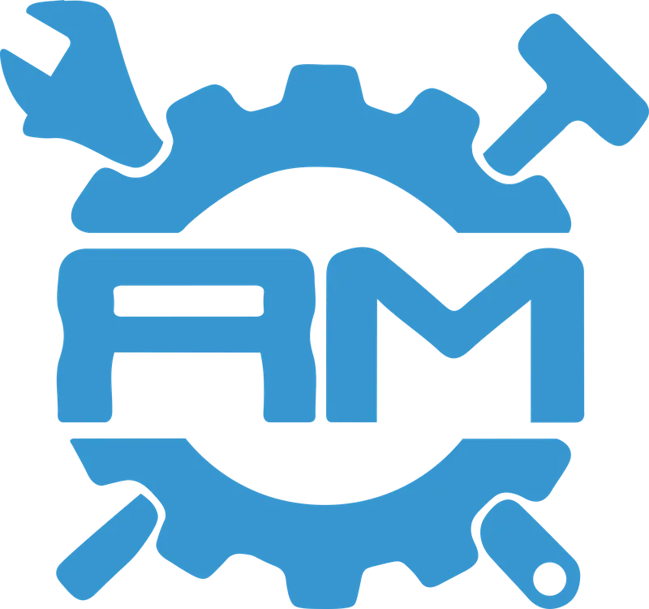
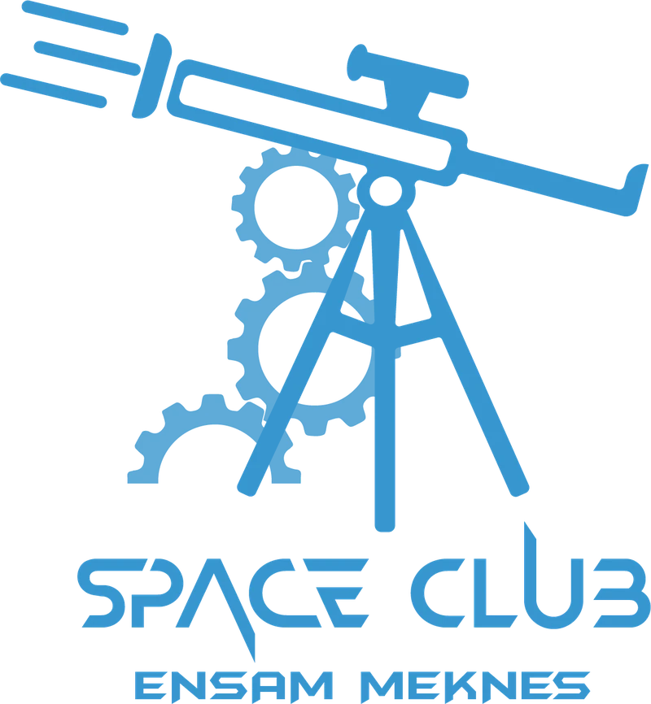
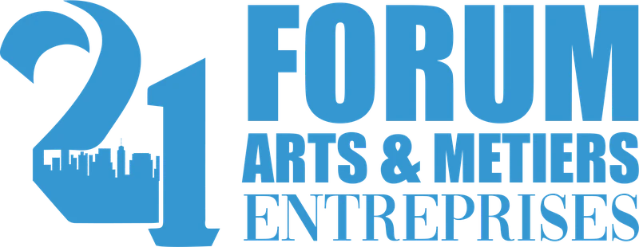

IV — Extracurricular
Extracurricular experience
Leading ENSAM Meknès's student association and Space Club, and running media for one of Morocco's largest academic-industry forums.

President, ADEAM
Association des Élèves Ingénieurs Arts & Métiers
2024 – 2025
Led the legally recognized student body of ENSAM Meknès — the primary interface between the student community and school administration. Oversaw an executive board of 10 members across 6 operational cells: student affairs, extracurricular activities, external relations & partnerships, internal operations, sports, and media & IT — with a total budget of 200,000 MAD.
Key achievements include reviving the Arts & Métiers Inter-Instituts after 6 consecutive years of slumber, organizing the school's traditional Gala, coordinating 22 student clubs, and driving the renovation of the student cafeteria and shared campus spaces.

President, Space Club
Arts & Métiers
2024 – 2025
Led the Space Club and organized the first astronomy festival in the Meknès region — conceived, planned, and executed entirely from scratch. An initiative that brought science to the public and put ENSAM on the map for something bigger than campus life.

Media Coordinator, FAME
Forum Arts & Métiers Entreprises · 21st edition
Nov 2023 – Jul 2024
Handled most of the media and communication for FAME — one of Morocco's most prominent academic-industry forums, organized annually by ENSAM Meknès students under the patronage of H.M. King Mohammed VI. Created social media content, designed printed materials, and led the production of the FAME Revue — the forum's flagship magazine featuring articles by leading figures of the Moroccan industry around the edition's industrial theme.
Next · VGallery
→